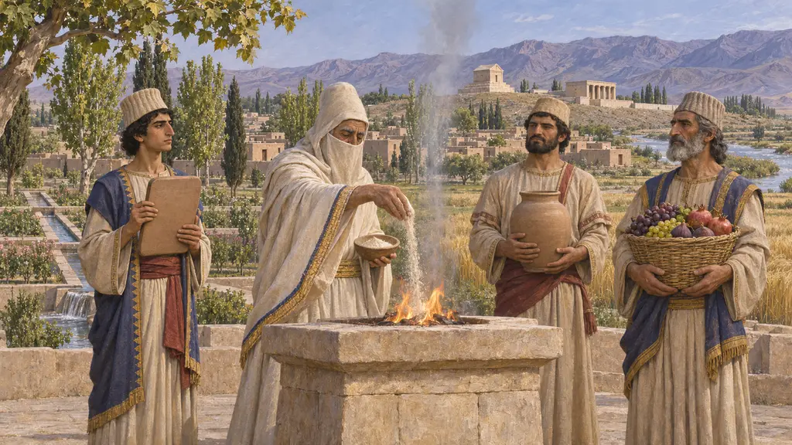
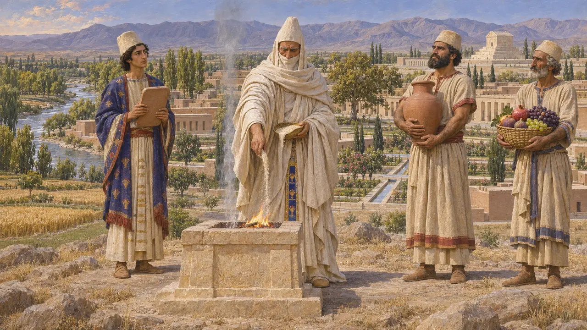
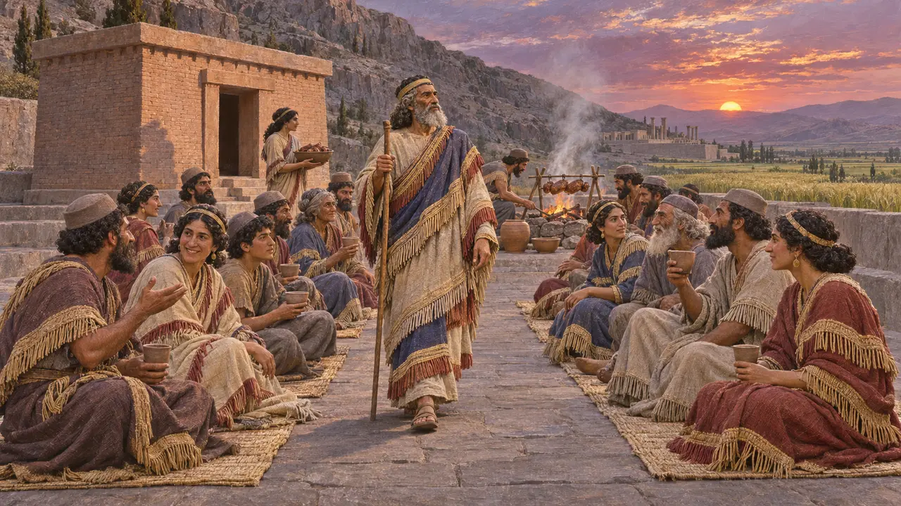

The lan offering
The King's storehouses pay for the gods
The commonest offering in the Persepolis tablets is the lan: barley or flour, fruit and wine issued month after month, a clerk's receipt for each. It is the closest thing we have to watching Achaemenid religion happen.
게임에서: The lan is the rite you can stage most often. It costs barley, and more if you have wine and fruit.

What the tablets show
당대 기록Persepolis Fortification tablets, about 509 to 493 BCE, issue food for religious use. Encyclopaedia Iranica gives the lan as about 30 litres of barley or flour, some fruit and 10 litres of wine each month. The tablet does not describe the ceremony. It records the goods and who took them.
Hallock 1969; Henkelman 2008; Iranica, "Magi"

Many gods, one budget
당대 기록One tablet splits 80 units of grain evenly between Ahuramazda and Mishdushi. Others supply Humban, Napirisha, the Babylonian Adad, the Iranian Narishanka, mountains and rivers. Iranica notes that the clerks treat them alike and that Elamite gods appear more often than Iranian ones.
PF 337; Iranica, "Persepolis Elamite tablets"

The other gods who are
분쟁 중Older books describe a Persian religion and separate foreign cults. Wouter Henkelman argued from the tablets that the Persians of Fars and the Elamites had grown together over generations, and that the lan was a shared practice with Elamite roots. How far that goes, and how Zoroastrian the kings were, is still argued.
Henkelman 2008; Henkelman 2021
출처
- Hallock 1969
- Henkelman 2008, The Other Gods Who Are
- Henkelman 2021